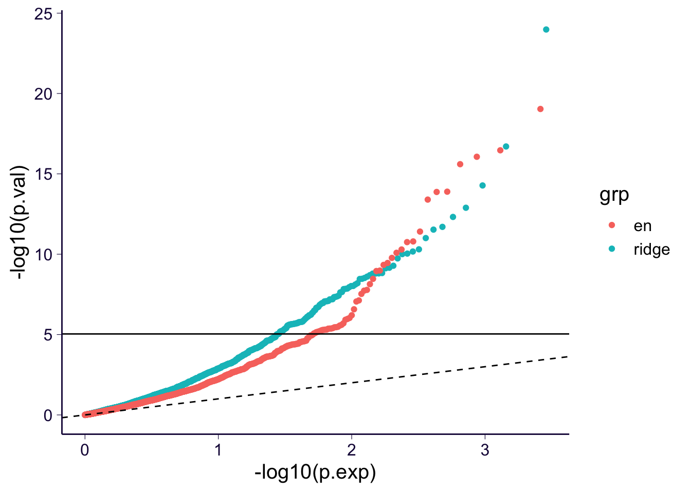
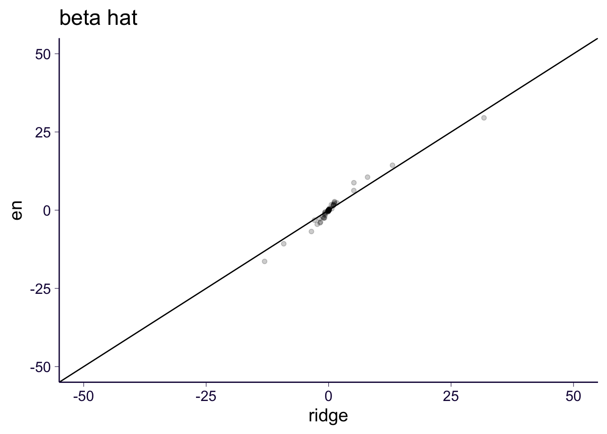
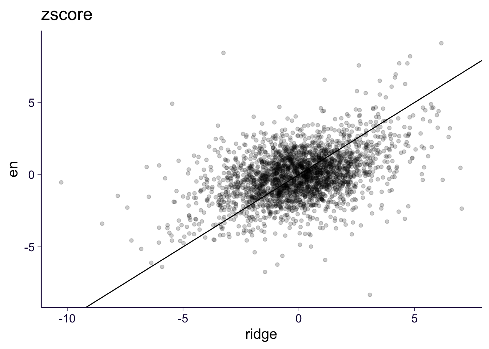
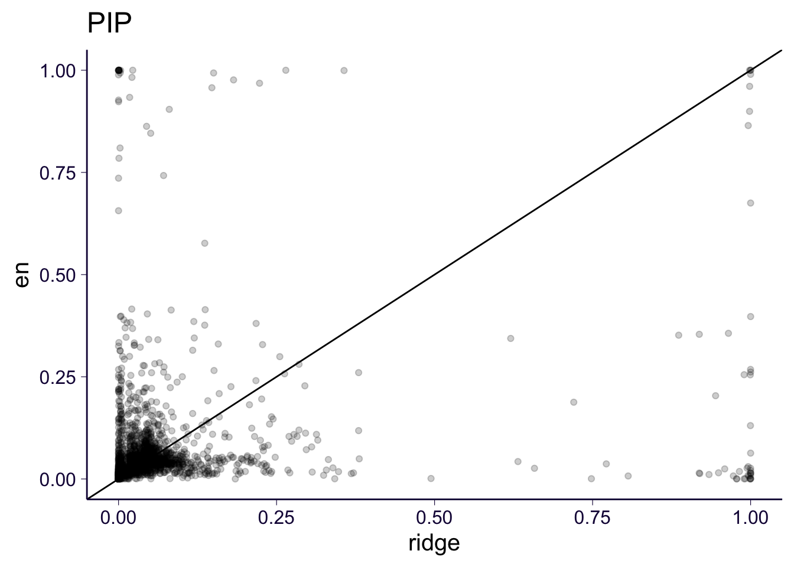
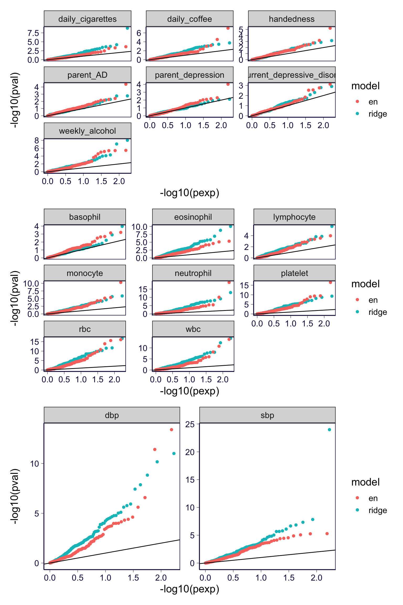
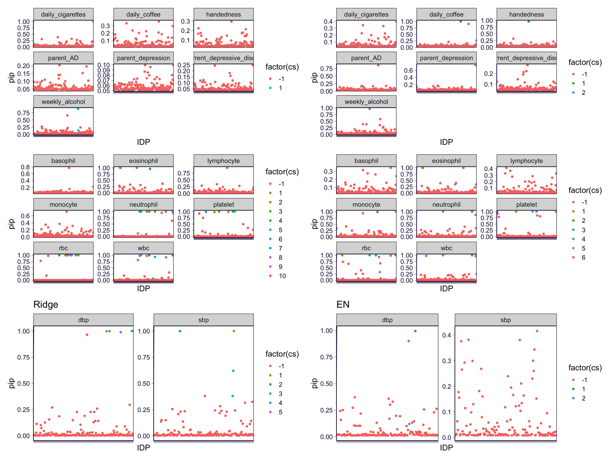
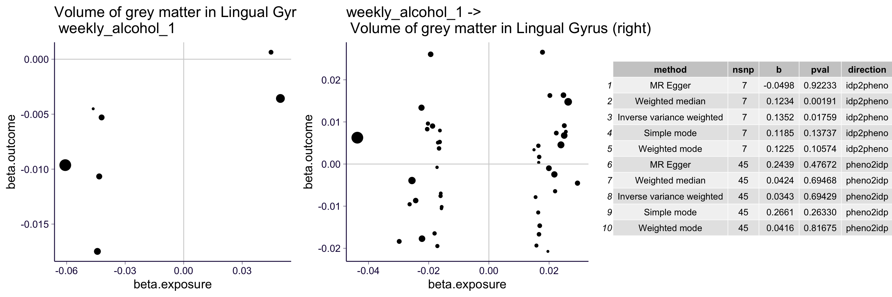
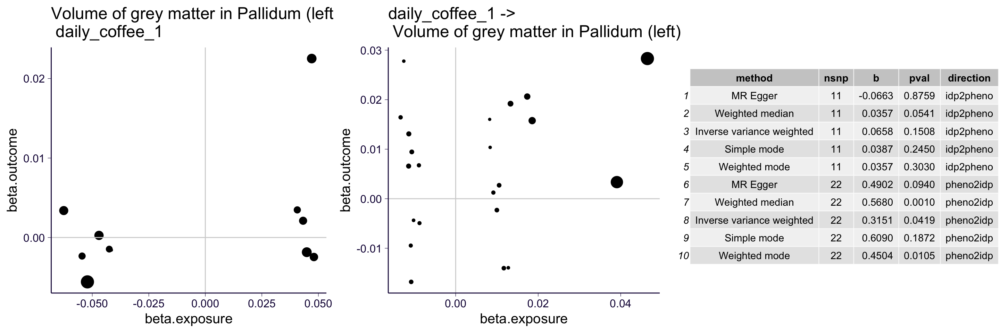
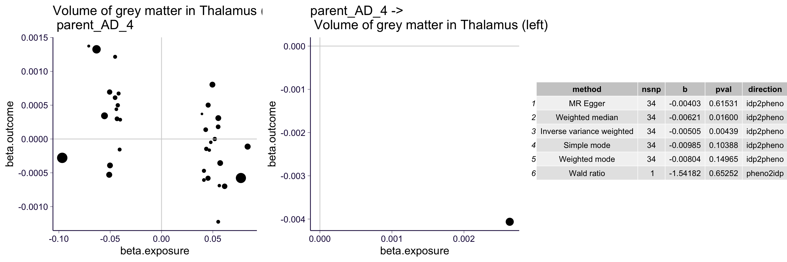

rm(list = ls())
library(ggplot2)
theme_set(theme_bw(base_size = 15))
source('https://gist.githubusercontent.com/liangyy/43912b3ecab5d10c89f9d4b2669871c9/raw/3ca651cfa53ffccb8422f432561138a46e93710f/my_ggplot_theme.R')
source('https://raw.githubusercontent.com/liangyy/misc-tools/master/plot_tool/plot_tools.R')
library(dplyr)
options(stringsAsFactors = F)
library(patchwork)
library(data.table)
options(datatable.fread.datatable = F)
pheno_interest = c('weekly_alcohol', 'recurrent_depressive_disorder', 'parent_depression', 'parent_AD', 'handedness', 'daily_coffee', 'daily_cigarettes')
pheno_bcc = c('wbc', 'rbc', 'platelet', 'lymphocyte', 'monocyte', 'neutrophil', 'eosinophil', 'basophil')
pheno_ht = c('dbp', 'sbp') # , 'ht', 'hb', 'mcv', 'mch', 'mchc')
pheno_rand = paste0('random_pheno_', 0 : 9)
pheno_sig_dmri = paste0('single_sig_dmri_', 0 : 9)
pheno_sig_orig = paste0('single_sig_orig_', 0 : 9)
source('rlib.R')
p2z = function(p, b) {
sign(b) * qnorm(p / 2)
}
library(ggpubr)Here we make a very specific comparison of the ImageXcan results between elastic net and ridge based predictors using IDP T1.
df_ridge = read.csv('~/Desktop/tmp/ukb_idp/data/imagexcan_round_1.linear.t1.csv')
df_en = read.csv('~/Desktop/tmp/ukb_idp/data/imagexcan_round_1.linear.en_t1.csv')
# extract the non simulation results
df = rbind(df_ridge %>% mutate(model = 'ridge'), df_en %>% mutate(model = 'en')) %>% filter(phenotype %in% c(pheno_bcc, pheno_ht, pheno_interest))
df_ridge2 = read.csv('~/Desktop/tmp/ukb_idp/data/imagexcan_round_1.susie.t1.csv')
df_en2 = read.csv('~/Desktop/tmp/ukb_idp/data/imagexcan_round_1.susie.en_t1.csv')
# extract the non simulation results
df2 = rbind(df_ridge2 %>% mutate(model = 'ridge'), df_en2 %>% mutate(model = 'en')) %>% filter(phenotype %in% c(pheno_bcc, pheno_ht, pheno_interest))Load dMRI and T1 IDP annotations.
t1 = readRDS('../misc_data/process_t1/t1_meta.rds')
t1 = t1 %>% mutate(IDP = paste0('IDP-', FieldID))
df_annot = t1qqplot_by_group(df$pval, group = df$model) + th
df %>% filter(pval < 1e-3) %>% reshape2::dcast(IDP + phenotype ~ model, value.var = 'bhat') %>%
ggplot() +
geom_point(aes(x = ridge, y = en), alpha = 0.2) +
coord_cartesian(xlim = c(-50, 50), ylim = c(-50, 50)) + geom_abline(slope = 1, intercept = 0) +
th + ggtitle('beta hat')## Warning: Removed 291 rows containing missing values (geom_point).
df %>% mutate(zscore = p2z(pval, bhat)) %>% reshape2::dcast(IDP + phenotype ~ model, value.var = 'zscore') %>%
ggplot() +
geom_point(aes(x = ridge, y = en), alpha = 0.2) +
# coord_cartesian(xlim = c(-50, 50), ylim = c(-50, 50)) +
geom_abline(slope = 1, intercept = 0) +
th + ggtitle('zscore')## Warning: Removed 272 rows containing missing values (geom_point).
df2 %>%
# filter(pval < 1e-3) %>%
reshape2::dcast(IDP + phenotype ~ model, value.var = 'pip') %>%
ggplot() +
geom_point(aes(x = ridge, y = en), alpha = 0.2) +
# coord_cartesian(xlim = c(-50, 50), ylim = c(-50, 50)) +
geom_abline(slope = 1, intercept = 0) +
th + ggtitle('PIP')## Warning: Removed 272 rows containing missing values (geom_point).
p1 = df %>% filter(phenotype %in% pheno_interest) %>% group_by(phenotype, model) %>% mutate(pexp = rank(pval) / (n() + 1)) %>%
ggplot() +
geom_point(aes(x = -log10(pexp), y = -log10(pval), color = model)) +
facet_wrap(~phenotype, scales = 'free_y') + th2 + geom_abline(slope = 1, intercept = 0)
p2 = df %>% filter(phenotype %in% pheno_bcc) %>% group_by(phenotype, model) %>% mutate(pexp = rank(pval) / (n() + 1)) %>%
ggplot() +
geom_point(aes(x = -log10(pexp), y = -log10(pval), color = model)) +
facet_wrap(~phenotype, scales = 'free_y') + th2 + geom_abline(slope = 1, intercept = 0)
p3 = df %>% filter(phenotype %in% pheno_ht) %>% group_by(phenotype, model) %>% mutate(pexp = rank(pval) / (n() + 1)) %>%
ggplot() +
geom_point(aes(x = -log10(pexp), y = -log10(pval), color = model)) +
facet_wrap(~phenotype, scales = 'free_y') + th2 + geom_abline(slope = 1, intercept = 0)
# p4 = df %>% filter(phenotype %in% pheno_rand) %>% group_by(phenotype, model) %>% mutate(pexp = rank(pval) / (n() + 1)) %>%
# ggplot() +
# geom_point(aes(x = -log10(pexp), y = -log10(pval), color = model)) +
# facet_wrap(~phenotype, scales = 'free_y') + th2 + geom_abline(slope = 1, intercept = 0)
p1 / p2 / p3 
p1 = df_ridge2 %>% filter(phenotype %in% pheno_interest) %>%
ggplot() +
geom_point(aes(x = IDP, y = pip, color = factor(cs))) +
facet_wrap(~phenotype, scales = 'free_y') + th2 + geom_abline(slope = 1, intercept = 0) +
theme(axis.text.x = element_blank())
p2 = df_ridge2 %>% filter(phenotype %in% pheno_bcc) %>%
ggplot() +
geom_point(aes(x = IDP, y = pip, color = factor(cs))) +
facet_wrap(~phenotype, scales = 'free_y') + th2 + geom_abline(slope = 1, intercept = 0) +
theme(axis.text.x = element_blank())
p3 = df_ridge2 %>% filter(phenotype %in% pheno_ht) %>%
ggplot() +
geom_point(aes(x = IDP, y = pip, color = factor(cs))) +
facet_wrap(~phenotype, scales = 'free_y') + th2 + geom_abline(slope = 1, intercept = 0) +
theme(axis.text.x = element_blank()) +
ggtitle('Ridge')
p11 = df_en2 %>% filter(phenotype %in% pheno_interest) %>%
ggplot() +
geom_point(aes(x = IDP, y = pip, color = factor(cs))) +
facet_wrap(~phenotype, scales = 'free_y') + th2 + geom_abline(slope = 1, intercept = 0) +
theme(axis.text.x = element_blank())
p21 = df_en2 %>% filter(phenotype %in% pheno_bcc) %>%
ggplot() +
geom_point(aes(x = IDP, y = pip, color = factor(cs))) +
facet_wrap(~phenotype, scales = 'free_y') + th2 + geom_abline(slope = 1, intercept = 0) +
theme(axis.text.x = element_blank())
p31 = df_en2 %>% filter(phenotype %in% pheno_ht) %>%
ggplot() +
geom_point(aes(x = IDP, y = pip, color = factor(cs))) +
facet_wrap(~phenotype, scales = 'free_y') + th2 + geom_abline(slope = 1, intercept = 0) +
theme(axis.text.x = element_blank()) +
ggtitle('EN')
(p1 + p11) / (p2 + p21) / (p3 + p31)
df2 %>% filter(phenotype %in% pheno_interest) %>% filter(cs > 0) %>% pander::pander(caption = 'IDP in 95% credible set among all focal phenotypes')| IDP | phenotype | pip | cs | model |
|---|---|---|---|---|
| IDP-25882 | weekly_alcohol | 0.8862 | 1 | ridge |
| IDP-25883 | weekly_alcohol | 0.1364 | 1 | ridge |
| PC-5 | daily_cigarettes | 1 | 1 | ridge |
| IDP-25853 | weekly_alcohol | 0.9682 | 2 | en |
| IDP-25850 | handedness | 0.9572 | 1 | en |
| IDP-25884 | daily_coffee | 0.9993 | 1 | en |
df2 %>% filter(phenotype %in% pheno_interest) %>% filter(pip > 0.5) %>% pander::pander(caption = 'IDP in 95% credible set among all focal phenotypes')| IDP | phenotype | pip | cs | model |
|---|---|---|---|---|
| IDP-25852 | weekly_alcohol | 0.658 | -1 | ridge |
| IDP-25882 | weekly_alcohol | 0.8862 | 1 | ridge |
| PC-5 | daily_cigarettes | 1 | 1 | ridge |
| IDP-25853 | weekly_alcohol | 0.9682 | 2 | en |
| IDP-25883 | weekly_alcohol | 0.5768 | -1 | en |
| PC-3 | parent_depression | 0.7424 | -1 | en |
| IDP-25878 | parent_AD | 0.8627 | -1 | en |
| IDP-25850 | handedness | 0.9572 | 1 | en |
| IDP-25884 | daily_coffee | 0.9993 | 1 | en |
| IDP-25905 | daily_coffee | 0.9043 | -1 | en |
95% credible set or PIP > 0.5.
df_meta = read.csv('../misc_data/pheno_of_interest.meta_table.csv')
tmp = rbind(
df2 %>% filter(phenotype %in% pheno_interest) %>% filter(cs > 0),
df2 %>% filter(phenotype %in% pheno_interest) %>% filter(pip > 0.5)
) %>% select(phenotype, IDP) %>% distinct()
tmp = inner_join(tmp, df_meta, by = 'phenotype')
tmp = tmp %>% select(id, IDP, gwas_code)
colnames(tmp) = c('pheno', 'idp', 'pheno_code')
write.table(tmp, '../misc_data/imagexcan_round_1.en_t1.signif.tsv', quo = F, sep = '\t', row = F, col = T)collector_mr = list()
collector_data = list()
df_signif = tmp %>% rename(IDP = idp)
for(i in 1 : nrow(df_signif)) {
tmp = readRDS(paste0('~/Desktop/tmp/ukb_idp/mr/MR.en_t1.', df_signif$IDP[i], '_x_', df_signif$pheno[i], '.rds'))
if(sum(is.na(tmp$idp2pheno$mr)) == 1 | sum(is.na(tmp$pheno2idp$mr)) == 1) {
next
}
if(sum(tmp$idp2pheno$mr$pval < 0.05) > 1 | sum(tmp$pheno2idp$mr$pval < 0.05) > 1) {
collector_mr[[length(collector_mr) + 1]] = rbind(
tmp$idp2pheno$mr %>% mutate(direction = 'idp2pheno', pheno = df_signif$pheno[i], IDP = df_signif$IDP[i]),
tmp$pheno2idp$mr %>% mutate(direction = 'pheno2idp', pheno = df_signif$pheno[i], IDP = df_signif$IDP[i])
)
collector_data[[length(collector_data) + 1]] = rbind(
tmp$idp2pheno$data %>% select(beta.exposure, beta.outcome, pval.exposure) %>% mutate(direction = 'idp2pheno', pheno = df_signif$pheno[i], IDP = df_signif$IDP[i]),
tmp$pheno2idp$data %>% select(beta.exposure, beta.outcome, pval.exposure) %>% mutate(direction = 'pheno2idp', pheno = df_signif$pheno[i], IDP = df_signif$IDP[i])
)
}
}
df_data = do.call(rbind, collector_data) %>% inner_join(df_annot, by = 'IDP')
df_mr = do.call(rbind, collector_mr) %>% inner_join(df_annot, by = 'IDP')The selected MR pairs.
# df_mr %>% select(pheno, IDP) %>% distinct() %>% pander::pander()
df_tmp = df_mr %>% select(pheno, IDP) %>% distinct()Show the plot.
for(i in 1 : nrow(df_tmp)) {
mydat = df_data %>% filter(pheno == df_tmp$pheno[i], IDP == df_tmp$IDP[i])
mymr = df_mr %>% filter(pheno == df_tmp$pheno[i], IDP == df_tmp$IDP[i])
idp_name = mydat$Field[1]
gwas_name = mydat$pheno[1]
plist = list()
plist[[length(plist) + 1]] = mydat %>% filter(direction == 'idp2pheno') %>% ggplot() + geom_point(aes(x = beta.exposure, y = beta.outcome, size = -log10(pval.exposure))) + geom_vline(xintercept = 0, color = 'lightgray') + geom_hline(yintercept = 0, color = 'lightgray') + th + ggtitle(paste0(idp_name, ' -> \n ', gwas_name)) +
theme(legend.position = 'none')
plist[[length(plist) + 1]] = mydat %>% filter(direction == 'pheno2idp') %>% ggplot() + geom_point(aes(x = beta.exposure, y = beta.outcome, size = -log10(pval.exposure))) + geom_vline(xintercept = 0, color = 'lightgray') + geom_hline(yintercept = 0, color = 'lightgray') + th + ggtitle(paste0(gwas_name, ' -> \n ', idp_name)) +
theme(legend.position = 'none')
# plist[[length(plist) + 1]] = gridExtra::tableGrob(df_mr %>% select(method, nsnp, b, pval, direction))
qq = ggarrange(plist[[1]], plist[[2]], ggtexttable(format(mymr %>% select(method, nsnp, b, pval, direction), digits = 3)), ncol = 3)
print(qq)
}